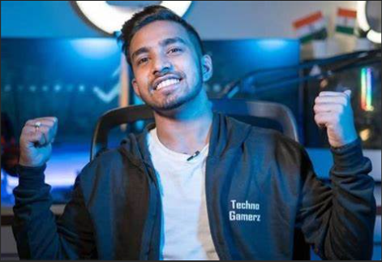
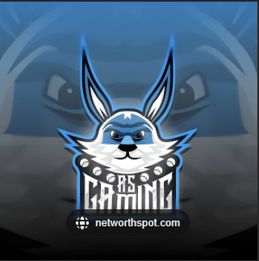
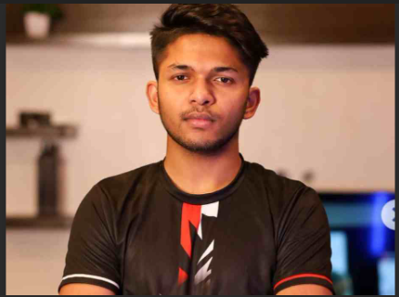
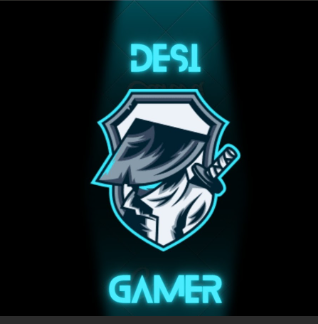

Greatest Gaming Youtubers
In India
1] Total Gaming (Ajjubhai)

Subscribers: 38.1 Million
Ajendra Vadiya, better known online as Total Gaming (also known as Ajju Bhai), is an Indian gaming YouTuber who live-streams the battle royale game Garena Free Fire to YouTube. He is most subscribed Indian gaming YouTuber.[1][2]. Has most fan folowing in current . Not only Number of Followers but also Number of haters is also in great quantity . He has not done face reaveal Yet.He started playing Low-end Mobile Games Like Clash Of Clans in 2015.He move don Playing Garena Freefire in 2018 After he saw few friends playing it. As it was gaining popularity in that time . He did not have mobile phone that could support such Games so he started playing games on PC . After Mastering in game's Mechanics. he decided to begin his youtube journey as a content creator and created his channel on October 9, 2018
2] Techno Gamerz (Ujjwal Chaurasia)
Subscribers: 37.6 Million
Ujjwal Chaurasia, Known as Techno Gamerz. Also Called PVP Devil in Minecraft Community. He is most loved Gamer in community. You found very less haters of him over the India/World.He is most known for his GTA 5 Gameplay series
3] AS Gaming
Subscribers: 20.1 Million
Ujjwal Chaurasia, Known as Techno Gamerz. Also Called PVP Devil in Minecraft Community. He is most loved Gamer in community. You found very less haters of him over the India/World.He is most known for his GTA 5 Gameplay series
4] Lokesh Gamer
Subscribers: 15.6 Million
Ujjwal Chaurasia, Known as Techno Gamerz. Also Called PVP Devil in Minecraft Community. He is most loved Gamer in community. You found very less haters of him over the India/World.He is most known for his GTA 5 Gameplay series
5] Gyan Gaming
Subscribers: 15 Million
Ujjwal Chaurasia, Known as Techno Gamerz. Also Called PVP Devil in Minecraft Community. He is most loved Gamer in community. You found very less haters of him over the India/World.He is most known for his GTA 5 Gameplay series
6] Desi Gamers
Subscribers: 14.4 Million
Ujjwal Chaurasia, Known as Techno Gamerz. Also Called PVP Devil in Minecraft Community. He is most loved Gamer in community. You found very less haters of him over the India/World.He is most known for his GTA 5 Gameplay series
7] Mythpat
Subscribers: 14.3 Million
Ujjwal Chaurasia, Known as Techno Gamerz. Also Called PVP Devil in Minecraft Community. He is most loved Gamer in community. You found very less haters of him over the India/World.He is most known for his GTA 5 Gameplay series
8] Two side Gamers

Subscribers: 12.5 Million
Ujjwal Chaurasia, Known as Techno Gamerz. Also Called PVP Devil in Minecraft Community. He is most loved Gamer in community. You found very less haters of him over the India/World.He is most known for his GTA 5 Gameplay series
9] CarryisLive
Subscribers: 12 Million
Ujjwal Chaurasia, Known as Techno Gamerz. Also Called PVP Devil in Minecraft Community. He is most loved Gamer in community. You found very less haters of him over the India/World.He is most known for his GTA 5 Gameplay series
10] Ujjwal (Ujjwal Chaurasia)
Subscribers: 10 Million
Ujjwal Chaurasia, Known as Techno Gamerz. Also Called PVP Devil in Minecraft Community. He is most loved Gamer in community. You found very less haters of him over the India/World.He is most known for his GTA 5 Gameplay series